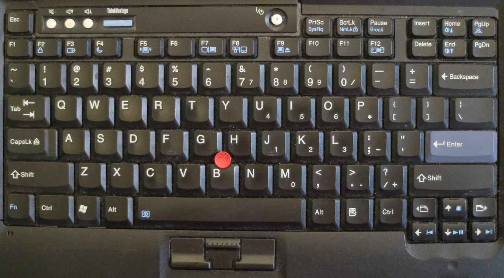

class: center, middle <!-- * Introduction --> # My fight with modern laptops LCA2017 .footnote[Hamish Coleman hamish@zot.org] ??? - Hi - questions, please raise your hand and I will stop shortly - slides available, etc - I'll show any urls again at the end, too --- <!-- ** Who am I --> <h2>Who am I</h2> <ul> <li>FIXME add a little more here <li>I am turning into a grumpy old man who is annoyed by change. <li>... but I want to do something 'constructive' about it </ul> ??? - TODO - concerned about the pattern that the computer/design industry is taking (cheapening and mass-producing/lowest-common-denominatoring) - xkcd /1770/ --- <!-- ** What is in this talk --> <h2>What is in this talk</h2> <ol> <li>What is wrong with current Laptops? <li>Why should we care about that? <li>How much can we change this? <li>Reversing firmware tables <li>Can I make the flash tool work from Linux? </ol> ??? FIXME - polish the english above - make sure it makes sense too.. - real quick outline -- - *SPOILER* - No --- <!-- ** Why did I do it (what motivated me) --> <h2>Why did I do it</h2> <ul> <li>Increasingly, hardware doesnt seem to meet my requirements </ul> ??? - evolution of hardware - beyond a certain point smaller is not always better - I certainly dont want cheaper at the cost of quality - There is a constant and growing feeling that none of the designs are catering for my needs and wants. This could be because I am old and crusty, but the point is that I dont like feeling that way. I assume that others have had the same feeling and want to encourage you in doing things about it. --- <!-- *** laptop evolution --> <h2>Laptop evolution</h2> ??? - --- <!-- **** my laptop opinions. computers: travel, workstation, other. --> <h2>My laptop opinions</h2> ??? - --- <!-- *** scope - reducing it make it possible for me --> <h2>Scope</h2> ??? - So, now that I have a list of things I dont like, what can I do - I'm not bunnie or purism - I cannot build a whole laptop - so, reduce the scope to the minimum feature set --- <!-- *** keyboard - show evolution of thinkpad keyboard - one slide with every keyboard I can find - up to x220 - 701c, 600x, r40, z61m x30, x61t, x220 --> <h2>Thinkpad Keyboards - "classic"</h2> <table> <tr> <td> <img width=250 src="thinkpad_1995_701c.jpg" /> <div class="caption">701c (1995)</div> <td> <img width=250 src="thinkpad_1999_600e_kb.jpg" /> <div class="caption">600e (1998)</div> <td> <img width=250 src="thinkpad_2002_x30_kb.jpg" /> <div class="caption">x30 (2002)</div> <tr> <td>  <div class="caption">z61m (2006)</div> <td> <img width=250 src="thinkpad_2007_x61_kb.jpg" /> <div class="caption">x61 (2007)</div> <td> <img width=250 src="thinkpad_2011_x220_kb.jpg" /> <div class="caption">x220 (2011)</div> </table> ??? - I like to type, I do it all day - Touch-typing is a muscle memory - Yes, there are differences with all these, but relatively small ones - mention what I think the key features are FIXME - note the wedge shaped "non-island" keys, and the high travel --- <!-- - one slide with every keyboard x230 and newer --> <h2>Thinkpad Keyboards - "modern"</h2> <table> <tr> <td> <img width=250 src="thinkpad_2012_x230_kb.jpg"> <div class="caption">x230 (2012)</div> <td> <div class="caption">x240 (2013)</div> <td> <div class="caption">x1 gen2 (2014)</div> <tr> <td> <img width=250 src="thinkpad_2015_x250.jpg"> <div class="caption">x250 (2015)</div> <td> <img width=250 src="thinkpad_2015_x1g3.jpg"> <div class="caption">x1 gen3 (2015)</div> <td> <img width=250 src="thinkpad_2016_x260_kb.jpg"> <div class="caption">x260 (2016)</div> </table> ??? - Changing keyboards is going to happen, but I need to use many - Dont remove keys! - note the x240, x250 and x260 are apparently physically interchangable - point out the x1 g2 as presaging the new mac keyboard by a couple of years - point out the other bonkers keys on the x1 g2 --- <!-- - final slide holding x220 and x230 side-by-side --> <h2>Keyboards - old and new</h2> <table> <tr> <td> <img width=375 src="thinkpad_2011_x220_kb.jpg"> <div class="caption">Thinkpad x220</div> <td> <img width=375 src="thinkpad_2012_x230_kb.jpg"> <div class="caption">Thinkpad x230</div> </table> ??? - The newest "classic" keyboard vs the oldest "modern" one --- <!-- *** assisted by physical compatibility and ease of replacement --> <h2>Replacing the x230 keyboard</h2> <ul> <li class="slide">Connector compatibility <li class="slide">backlight and burnouts <li class="slide">Many of the top keys didnt work <li class="slide">None of the Fn-Combos worked properly <li class="slide">Could hack the whole keyboard </ul> ??? TODO - add connector photos - add burnout photos - add photos of rewired keyboard - So similar that you can just plug it in.. except for a couple of issue - hardware hacking is possible, if laborious - seems a bit dirty, really --- <!-- * first steps --> <h2>Its all just software...</h2> <ul> <li class="slide">Schematics of both laptops show all the keys are there <li class="slide">All still connected to the Embedded Controller <li class="slide">If this was open source, I'd just update the code ??? TODO: - add schematic photo --- <!-- ** download firmware , look for tables , hexdump/search/existing research --> <h2>... but software sucks</h2> <ul> <li>download firmware <li class="slide">Find some existing code dumps <li class="slide">Match the keyboard master tables, and some other data <li class="slide">However, the firmware doesnt look 'sane' <li class="slide">Still have no way to install my patch ??? TODO: - add hexdump photo - ref old firmware dump - add embryonic patch details --- <!-- * breakthrough --> <h2>breakthrough in EC firmware</h2> <ul> <li>See the talk before this one :-) by the mec-tools author <li>Assuming some people missed that talk FIXME </ul> ??? TODO - add some mec tools notes --- <!-- ** radare2 --> <h2>Reverse Engineering</h2> <ul> <li>Use Radare2 (and learn it) <li>Has support for the needed ARCompact instuction set </ul> ??? FIXME - add notes --- <!-- ** improving the radare analysis --> <h2>FIXME improving the radare analysis</h2> <ul> <li>Radare2 ARC support was quite flakey <li>Worse, the ARCompact support appeared to be half missing <li>What was there was big endian only <li>no jump delay slot handling made most tracing difficult <li>jumps and branches were not analysed, either <li>Improve illegal instruction detection - massively improving browsing <li>In the visual analysis, scrolling backwards ended up going forwards! </ul> ??? FIXME - add notes - clarify or reduce the above - mention NUXI format used by the little endian instruction coding --- <!-- ** looking for structures --> <h2>FIXME looking for structures</h2> <ul> <li>dot points </ul> ??? FIXME - add notes --- <!-- ** chasing pointers --> <h2>FIXME chasing pointers</h2> <ul> <li>dot points </ul> ??? FIXME - add notes --- <!-- ** colaboration --> <h2>FIXME colaboration</h2> <ul> <li>dot points </ul> ??? FIXME - add notes --- <!-- ** initial publish --> <h2>FIXME initial publish</h2> <ul> <li>dot points </ul> ??? FIXME - add notes --- <!-- * polishing (the thinkpad-ec project) --> <h2>FIXME polishing (the project)</h2> <ul> <li>dot points </ul> ??? FIXME - add notes --- <!-- ** audience (the people who wanted to try to use that project) --> <h2>FIXME audience</h2> <ul> <li>dot points </ul> ??? FIXME - add notes --- <!-- ** issues with distribution --> <h2>FIXME issues with distribution</h2> <ul> <li>dot points </ul> ??? - not my binaries, not allowed to distribute FIXME - add more notes --- <!-- ** supporting more hardware --> <h2>FIXME supporting more hardware</h2> <ul> <li>dot points </ul> ??? FIXME - add notes --- <!-- * How does flashing work --> <h2>FIXME How does flashing work</h2> <ul> <li>dot points </ul> ??? FIXME - add notes --- <!-- ** Lenovo tools --> <h2>FIXME Lenovo tools</h2> <ul> <li>dot points </ul> ??? FIXME - add notes --- <!-- ** reversing dosflash --> <h2>FIXME reversing dosflash</h2> <ul> <li>dot points </ul> ??? FIXME - add notes --- <!-- *** writing a simple kvm hypervisor --> <h2>FIXME writing a simple kvm hypervisor</h2> <ul> <li>dot points </ul> ??? FIXME - add notes --- <!-- *** itterating on implementing missing features --> <h2>FIXME itterating on implementing missing features</h2> <ul> <li>dot points </ul> ??? FIXME - add notes --- <!-- ** writing a device driver for real hardware --> <h2>FIXME device driver for real hardware</h2> <ul> <li>dot points </ul> ??? FIXME - add notes --- <!-- ** how is the firmware protected? is this a risk --> <h2>FIXME how is the firmware protected?</h2> <ul> <li>dot points </ul> ??? FIXME - add notes --- <!-- * next steps --> <h2>FIXME next steps</h2> <ul> <li>dot points </ul> ??? FIXME - add notes --- <!-- ** Still want a newer laptop, dont want to spend money without keyboard --> <h2>FIXME Still want a newer laptop</h2> <ul> <li>dot points </ul> ??? FIXME - add notes --- <!-- ** build a usb adaptor for the raw keyboard --> <h2>FIXME build a usb adaptor</h2> <ul> <li>dot points </ul> ??? FIXME - add notes <!-- things from abstract not specifically mentioned above: * various lenovo/thinkpad methods for protecting flash updates reference material: * https://hackaday.com/2016/10/28/apple-sucks-now-heres-a-thinkpad-buyers-guide/ * obviously the new macbook pro * x62 (replacement M/B for x61) http://forum.51nb.com/forum-x62-1.html * t92 (vaporware 'classic' laptop from lenovo) --> <!-- End slides. -->